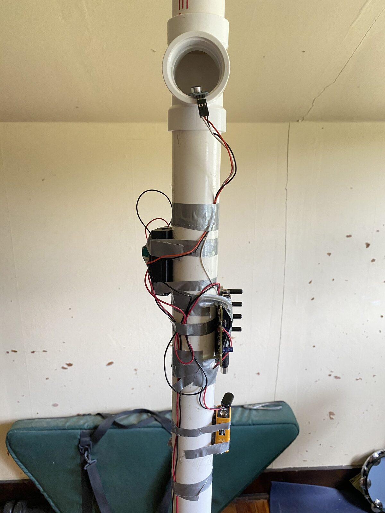
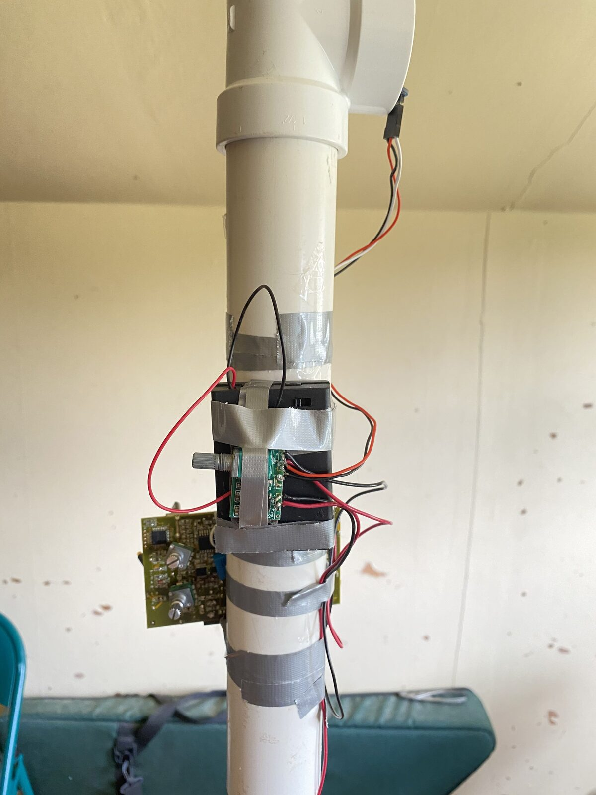
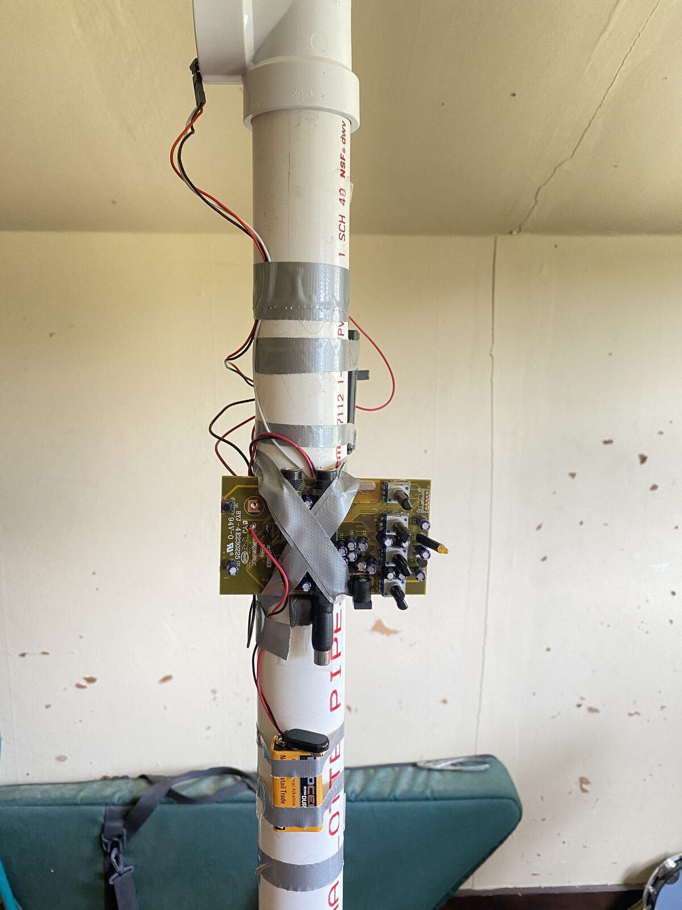
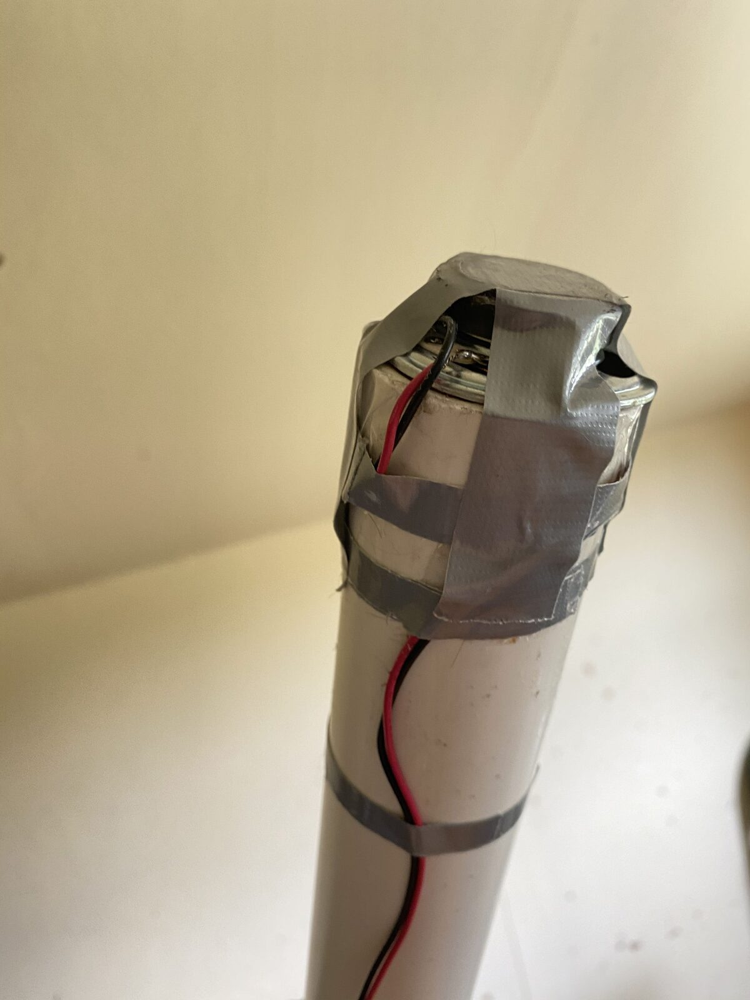
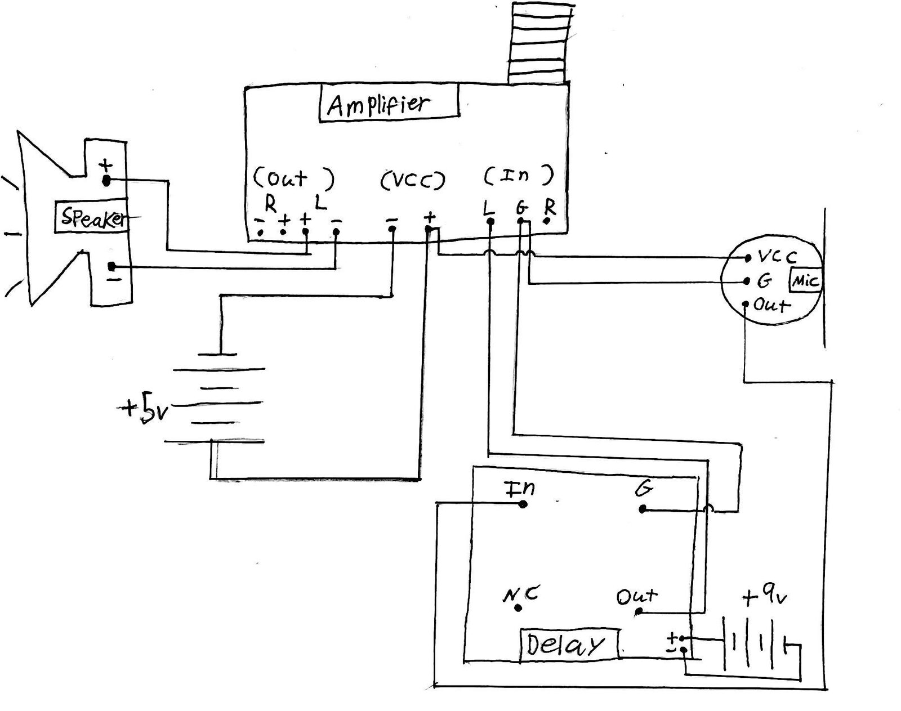

Xibuccal Instruments: Designing Expanded and Interconnected Vocal Tracts
Xibuccal Instruments: Designing Expanded and Interconnected Vocal Tracts
1. PubPub Link
https://nime.pubpub.org/pub/x5x0crr8/draft?access=scajr65o
2. ABSTRACT
Eli Berman (she/they) demonstrates how she makes solo, electroacoustic vocal music with various combinations of xibuccal instruments, a collection of acoustic and electroacoustic extensions of the vocal tract designed by Berman for her undergraduate thesis at Princeton University in 2020. The term "xibuccal" comes from the word “bibuccal," which describes two people singing into each other's mouths. Berman first coined the term “xibuccal” to describe any “x” number of people singing into each other's mouths through interconnected plastic pipes. These shared vocal instruments became too dangerous to continue developing once COVID-19 hit the east coast of the U.S. in Spring 2020. This reality inspired the continued development of Berman’s solo instruments, which aim to allow one to sing into themself and the ‘singing’ bodies of plastic pipes, whose resonances are activated through feedback and manipulated by vocal input and digital delay. By extending the human vocal tract, and thus the human body, into the bodies of others–humans, pipes, and electronic hardware alike–Berman is asking 1) Where does the voice and the body begin and end? 2) What are the boundaries between humans and inanimate objects when our organic voices meld with the resonances or ‘voices’ of inorganic materials? and 3) How can obscuring the boundaries between voices, bodies, and materials complicate the foundational binaries of mind/body, self/other, and human/machine that contribute to the logic of the western gender binary (man/woman)?
3. Requirements
- equipment: PVC pipes and fittings, small microphone with built-in preamplifier, small amplifier, digital delay pedal, transducer, batteries.
- space: traditional concert stage, gallery, public space.
- performer: Eli Berman
- feasibility: performances at National Sawdust (2020), Princeton University Performance Lab (2019), Hack the Drag at Princeton University (2019).
4. Performance Notes
The two videos below showcase Eli Berman’s solo improvisations with some of her xibuccal instruments. The first video includes her electroacoustic arrangement of the Hebrew prayer "Birchas Kohanim.” Inspired by a recording of Isaiah Meisels in 1913, this is an improvisational work-in-progress from Berman’s Khazn Elektrish (electric cantor) project, an expanding repertoire of solo, electro-acoustic Yiddish songs and khazones (Ashkenazic cantorial music). The instrument creates sound using vocal input from a small microphone with a built-in preamplifier, which sends the vocal input to a digital delay pedal and a small amplifier, which sends the processed and unprocessed output through a transducer, which is placed on a clear tape diaphragm covering one end of a PVC pipe. The transducer and diaphragm turn the PVC pipe into a kind of speaker, which produces feedback when interacting with the small microphone. Berman experiments with combinations of various vocal techniques, amplitude levels, and delay pedal settings. Filmed live at NationalSawdust+ Spatial Sound Lab hosted by Laurie Anderson & Arto Lindsay Featuring artists from the Princeton Atelier February 22, 2020.
The second video showcases an improvisatory work-in-progress with three of Berman’s xibuccal instruments. In addition to two electroacoustic feedback pipes, Berman wears a handmade device made of PVC and corrugated pipes that 1) splits the output of her voice into two sound holes in order to reach both mics on the feedback pipes and 2) facilitates communication between the two feedback pipes themselves. All sounds are made from a combination of her voice, the pipes and their circuitry, and digital delay. This piece has served as the closest approximation for communal, electroacoustic xibuccal singing since COVID-19 made it unsafe for Berman and her collaborators to explore electroacoustic ensemble work.
5. Media


Front view: mic inside vocal sound hole


Side view: mini amplifier on top of battery back


Side view: digital delay pedal and battery


Bottom view: transducer fixed to tape membrane stretched across sound hole


Circuitry for Eli Berman’s electroacoustic xibuccal instruments.
6. Acknowledgments
Eli Berman would like to thank her thesis advisor Dan Trueman as well as her unofficial faculty/staff advisors Jeff Snyder, Sharon De La Cruz, Aatish Bhatia, Jess Rowland, and Aynsley Vandenbroucke. She would also like to thank her inspiring student collaborators: MC Otani, Mariana Corichi Gomez, Sean Crites, Emily Liushen, Kirsten Keels, Akiva Jacobs, Mayra Keren, Christien Ayers, Allison Spann, Tim Ruszala, Gloria Yin, and Ishani Kulkarni.
This work was supported by the Department of Music at Princeton University as well as the Office of Undergraduate Research, Council on Science and Technology, and Program in Gender and Sexuality Studies at Princeton University.